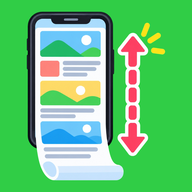

縦長スクショ
スクロールする画面を、自動でスクロールしながら撮影して、1枚の縦長の画像につなげて保存するアプリ。
できること
- ✓長いWebページやチャットなど、スクロールする画面を、自動でスクロールしながら撮影して、1枚の縦長の画像につなげる
- ✓撮影は、フローティングボタンから「撮影開始」を押したときだけ。撮影中はいつでもキャンセルできる
- ✓保存の前にプレビューで確認して、保存かキャンセルを選べる。保存先は端末の Pictures/ScrollCapture
- ✓撮影した画像は、端末の中だけで処理する。外部へ送信しない
- ✓ライト・ダークのテーマと、日本語・英語・簡体字中国語・繁体字中国語・韓国語・スペイン語・ポルトガル語・フランス語・ドイツ語・ロシア語・インドネシア語・イタリア語の12言語に対応
- ✓無料で使える(広告が表示されます)。月額・年額のPREMIUMに登録すると、広告が表示されなくなる
ユーザー補助サービスについて
- ・このアプリは、AndroidのAccessibilityService(ユーザー補助サービス)を使います。目的は、スクロールする画面を縦長の1枚の画像にすることだけです。
- ・サービスで行うのは、「撮影開始」を押したときのスクリーンショットの取得と、画面をスクロールするための上方向のスワイプです。画面の文字や部品は読み取りません。
- ・許可を求める前に、アプリの中で利用目的と取得するデータを説明し、同意を確認します。サービスは、端末の設定からいつでも停止できます。
- ・他のアプリが画面の撮影を禁止している場合は、撮影できません。
対応環境
- ・Android 11 以降